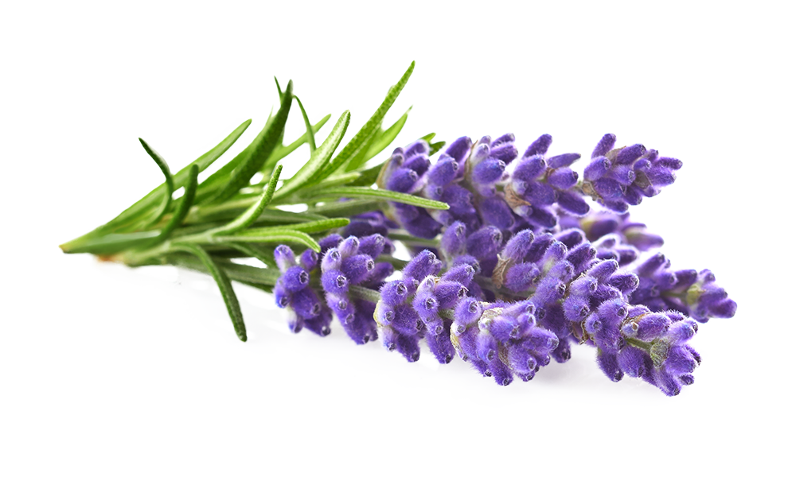

Fragancias
Las fragancias en las velas de soja añaden un toque especial a nuestra experiencia sensorial. Estas fragancias, cuidadosamente seleccionadas, se mezclan con la cera de soja natural para crear una sinfonía aromática que envuelve nuestros sentidos.
Lavanda
Tiene un efecto calmante en el sistema nervioso, ayudando a reducir el estrés, la ansiedad y la tensión mental. Puede promover un estado de relajación y ser útil para conciliar el sueño. Su aroma suave y floral puede inducir un ambiente tranquilo y propicio para el descanso.
Melón
Puede estimular el apetito y despertar las papilas gustativas. Su jugosa fragancia y dulce puede aumentar el disfrute de los alimentos y las bebidas, especialmente durante los meses calurosos de verano. Tiene efecto refrescante en el ambiente. Puede ayudar a neutralizar los olores no deseados y crear una sensación de frescura en el hogar u otros espacios.

Limon
Tiene un efecto estimulante en nuestro estado de ánimo y energía. Su aroma cítrico brillante y refrescante puede ayudar a despertar nuestros sentidos, aumentar la concentración y promover la claridad mental. Puede ayudar a aliviar el estrés, la ansiedad y la depresión leve, y promover una sensación general de bienestar. Puede ayudar a neutralizar los olores no deseados en el ambiente, dejando una sensación de frescura y limpieza.

Jazmín
Ha sido conocido durante mucho tiempo como un afrodisíaco natural. Su aroma dulce y sensual puede ayudar a estimular el deseo y la intimidad, creando un ambiente romántico y seductor. Se utiliza normalmente en la aromaterapia debido a sus propiedades para equilibrar las emociones. Puede ayudar a aliviar el estrés, la irritabilidad y promover una sensación de bienestar general.

Sandia
Es conocido por su cualidad refrescante. Su aroma fresco y jugoso puede ayudar a crear una sensación de frescura y revitalización, especialmente durante los días calurosos de verano. Tiene un efecto estimulante en nuestros sentidos y en nuestro estado de ánimo. Puede despertar nuestra energía y alegría, brindando una sensación de vitalidad y entusiasmo.

Coco
Tiene un efecto relajante y tranquilizante en nuestro estado de ánimo. Su aroma tropical nos transporta a ambientes cálidos y exóticos, lo que puede ayudar a reducir el estrés y la ansiedad. se asocia comúnmente con sensaciones de alegría y bienestar. Puede ayudar a levantar el animo ya crear una atmosfera positiva y alegre.